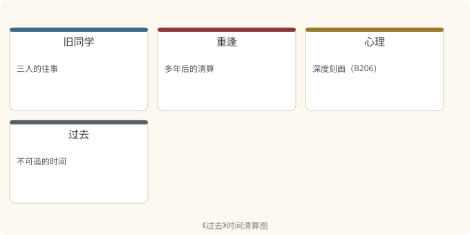

过去
一、基本信息
| 作者 | 郁达夫 |
|---|---|
| 成书/出版 | 1927年（Britannica：Guoqu (1927; The Past)） Yu Dafu — Encyclopaedia Britannica（百科全书） |
| 国别/地区 | 中国 |
| 时代 | 现当代 · 现代 |
| 体裁 | 短篇小说 |
| 语言 | 汉语（白话） |

《过去》时间清算图（主题·结构图）
二、创作背景
Britannica（B206）：'Guoqu (1927; The Past)'——'praised for its psychological depth'（因其心理深度而受赞誉——Britannica）。
转向后的郁达夫：从自我暴露到心理深描（B206：1923年后主题转变）。
三、内容脉络
李白时与三 sisters？——不：于质夫？——情节通说待核：三人同学旧事与多年重逢的情感清算。
四、主要人物表
| 人物 | 身份 | 说明 |
|---|---|---|
| 李白时？——人名待核 | 青年 | （通说待核） |
五、主题与艺术特点
- '过去'的时间哲学（篇名通说）。
- 心理深度（B206：psychological depth）。
- 情感的自省（通说）。
六、影响与评论
- Britannica：'praised for its psychological depth'（B206）。
Yu Dafu — Encyclopaedia Britannica（百科全书） - 作者页：郁达夫1927年作品谱系（B206）。
Yu Dafu — Encyclopaedia Britannica（百科全书）
七、阅读建议
难点
- 三角情感的结构。
- 郁达夫式的自剖。
- 《过去》（收于《郁达夫全集》，通说待核）。
对照《沉沦》《日记九种》。
八、待核实
- 人名（李白时/朴静远？）核对。
- 1927年发表（《洪水》说）待核。
- 'psychological depth'原句核对。
本页主要来源
郁达夫的其他收录作品：沉沦